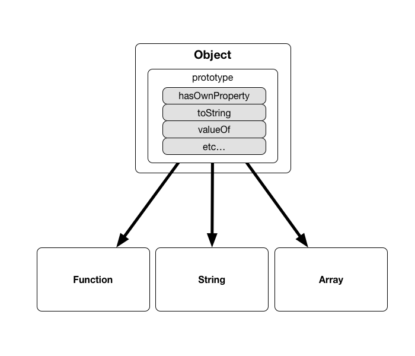

プロトタイプオブジェクト
「オブジェクト」の章では、オブジェクトの処理方法について見てきました。
その中で、空のオブジェクトであってもtoStringメソッドなどを呼び出せていました。
const obj = {};
console.log(obj.toString()); // "[object Object]"
オブジェクトリテラルで空のオブジェクトを定義しただけなのに、toStringメソッドを呼び出せています。
このメソッドはどこに実装されているのでしょうか？
また、JavaScriptにはtoString以外にも、オブジェクトに自動的に実装されるメソッドがあります。
これらのオブジェクトに組み込まれたメソッドをビルトインメソッドと呼びます。
この章では、これらのビルトインメソッドがどこに実装され、なぜObjectのインスタンスから呼び出せるのかを確認していきます。
詳しい仕組みについては「クラス」の章で改めて解説するため、この章では大まかな動作の流れを理解することが目的です。
Objectはすべての元
Objectには、他のArray、String、Functionなどのオブジェクトとは異なる特徴があります。
それは、他のオブジェクトはすべてObjectを継承しているという点です。
正確には、ほとんどすべてのオブジェクトはObject.prototypeプロパティに定義されたprototypeオブジェクトを継承しています。
prototypeオブジェクトとは、すべてのオブジェクトの作成時に自動的に追加される特殊なオブジェクトです。
Objectのprototypeオブジェクトは、すべてのオブジェクトから利用できるメソッドなどを提供するベースオブジェクトとも言えます。

具体的にどういうことかを見てみます。
先ほども登場したtoStringメソッドは、Objectのprototypeオブジェクトに定義があります。
次のように、Object.prototype.toStringメソッドの実装自体も参照できます。
// `Object.prototype`オブジェクトに`toString`メソッドの定義がある
console.log(typeof Object.prototype.toString); // => "function"
このようなprototypeオブジェクトに組み込まれているメソッドはプロトタイプメソッドと呼ばれます。
この書籍ではObject.prototype.toStringのようなプロトタイプメソッドを「ObjectのtoStringメソッド」と短縮して呼ぶことがあります。
Objectのインスタンスは、このObject.prototypeオブジェクトに定義されたメソッドやプロパティを継承します。
つまり、オブジェクトリテラルやnew Objectでインスタンス化したオブジェクトは、Object.prototypeに定義されたものが利用できるということです。
次のコードでは、オブジェクトリテラルで作成（インスタンス化）したオブジェクトから、Object.prototype.toStringメソッドを参照しています。
このときに、インスタンスのtoStringメソッドとObject.prototype.toStringは同じものとなることがわかります。
const obj = {
"key": "value"
};
// `obj`インスタンスは`Object.prototype`に定義されたものを継承する
// `obj.toString`は継承した`Object.prototype.toString`を参照している
console.log(obj.toString === Object.prototype.toString); // => true
// インスタンスからプロトタイプメソッドを呼び出せる
console.log(obj.toString()); // => "[object Object]"
このようにObject.prototypeに定義されているtoStringメソッドなどは、インスタンス作成時に自動的に継承されるため、Objectのインスタンスから呼び出せます。
これによりオブジェクトリテラルで作成した空のオブジェクトでも、Object.prototype.toStringメソッドなどを呼び出せるようになっています。
このインスタンスからprototypeオブジェクト上に定義されたメソッドを参照できる仕組みをプロトタイプチェーンと呼びます。
プロトタイプチェーンの仕組みについては「クラス」の章で扱うため、ここではインスタンスからプロトタイプメソッドを呼び出せるということがわかっていれば問題ありません。
[コラム] Object#toStringという短縮した表記について
この書籍では、Object.prototype.toStringのようにprototypeを含めて毎回書くと冗長なため、「ObjectのtoStringメソッド」と短縮して書く場合があります。
この書籍以外の文章では、Object.prototype.toStringをObject#toStringのようにprototypeの代わりに#を利用して表しているケースがあります。
#がprototypeの短縮表現として使われていたのは、#がJavaScriptの構文として使われていない記号でもあったためです。
詳細は「クラス」の章で解説しますが、ES2022では#がJavaScriptの構文として追加され、#という記号が意味をもつようになりました。
ES2022以降では、説明のために#をprototypeの短縮表現に使うと、人によっては異なる意味に見えてしまう可能性があります。
そのため、この書籍はObject.prototype.toStringをObject#toStringのように#を使って表す短縮表記は利用していません。
プロトタイプメソッドとインスタンスメソッドの優先順位
プロトタイプメソッドと同じ名前のメソッドがインスタンスオブジェクトに定義されている場合もあります。 その場合には、インスタンスに定義したメソッドが優先して呼び出されます。
次のコードでは、ObjectのインスタンスであるcustomObjectにtoStringメソッドを定義しています。
実行してみると、プロトタイプメソッドよりも優先してインスタンスのメソッドが呼び出されていることがわかります。
// オブジェクトのインスタンスにtoStringメソッドを定義
const customObject = {
toString() {
return "custom value";
}
};
console.log(customObject.toString()); // => "custom value"
このように、インスタンスとプロトタイプオブジェクトで同じ名前のメソッドがある場合には、インスタンスのメソッドが優先されます。
Object.hasOwn静的メソッドとin演算子との違い
「オブジェクト」の章で学んだObject.hasOwn静的メソッドとin演算子の挙動の違いについて見ていきます。
2つの挙動の違いはこの章で紹介したプロトタイプオブジェクトに関係しています。
Object.hasOwn静的メソッドは、指定したオブジェクト自体が指定したプロパティを持っているかを判定します。
一方、in演算子はオブジェクト自身が持っていなければ、そのオブジェクトの継承元であるprototypeオブジェクトまで探索して持っているかを判定します。
つまり、in演算子はインスタンスに実装されたメソッドなのか、プロトタイプオブジェクトに実装されたメソッドなのかを区別しません。
次のコードでは、空のオブジェクトがtoStringメソッドを持っているかをObject.hasOwn静的メソッドとin演算子でそれぞれ判定しています。
Object.hasOwn静的メソッドはfalseを返し、in演算子はtoStringメソッドがプロトタイプオブジェクトに存在するためtrueを返します。
const obj = {};
// `obj`というオブジェクト自体に`toString`メソッドが定義されているわけではない
console.log(Object.hasOwn(obj, "toString")); // => false
// `in`演算子は指定されたプロパティ名が見つかるまで親をたどるため、`Object.prototype`まで見にいく
console.log("toString" in obj); // => true
次のように、インスタンスがtoStringメソッドを持っている場合は、Object.hasOwn静的メソッドもtrueを返します。
// オブジェクトのインスタンスにtoStringメソッドを定義
const obj = {
toString() {
return "custom value";
}
};
// オブジェクトのインスタンスが`toString`メソッドを持っている
console.log(Object.hasOwn(obj, "toString")); // => true
console.log("toString" in obj); // => true
オブジェクトの継承元を明示するObject.createメソッド
Object.createメソッドを使うと、第一引数に指定したprototypeオブジェクトを継承した新しいオブジェクトを作成できます。
これまでの説明で、オブジェクトリテラルはObject.prototypeオブジェクトを自動的に継承したオブジェクトを作成していることがわかりました。
オブジェクトリテラルで作成する新しいオブジェクトは、Object.createメソッドを使うことで次のように書けます。
// const obj = {} と同じ意味
const obj = Object.create(Object.prototype);
// `obj`は`Object.prototype`を継承している
// そのため、`obj.toString`と`Object.prototype.toString`は同じとなる
console.log(obj.toString === Object.prototype.toString); // => true
ArrayもObjectを継承している
ObjectとObject.prototypeの関係と同じように、ビルトインオブジェクトArrayもArray.prototypeを持っています。
同じように、配列（Array）のインスタンスはArray.prototypeを継承します。
さらに、Array.prototypeはObject.prototypeを継承しているため、ArrayのインスタンスはObject.prototypeも継承しています。
Arrayのインスタンス →Array.prototype→Object.prototype
Object.createメソッドを使ってArrayとObjectの関係をコードとして表現してみます。
この疑似コードは、Arrayコンストラクタの実装など、実際のものとは異なる部分があるため、あくまでイメージであることに注意してください。
// このコードはイメージです！
// `Array`コンストラクタ自身は関数でもある
const Array = function() {};
// `Array.prototype`は`Object.prototype`を継承している
Array.prototype = Object.create(Object.prototype);
// `Array`のインスタンスは、`Array.prototype`を継承している
const array = Object.create(Array.prototype);
// `array`は`Object.prototype`を継承している
console.log(array.hasOwnProperty === Object.prototype.hasOwnProperty); // => true
このように、ArrayのインスタンスもObject.prototypeを継承しているため、
Object.prototypeに定義されているメソッドを利用できます。
次のコードでは、ArrayのインスタンスからObject.prototype.hasOwnPropertyメソッドが参照できていることがわかります。
const array = [];
// `Array`のインスタンス -> `Array.prototype` -> `Object.prototype`
console.log(array.hasOwnProperty === Object.prototype.hasOwnProperty); // => true
このようなhasOwnPropertyメソッドの参照が可能なのもプロトタイプチェーンという仕組みによるものです。
ここでは、Object.prototypeはすべてのオブジェクトの親となるオブジェクトであることを覚えておくだけで問題ありません。
これにより、ArrayやStringなどのインスタンスもObject.prototypeが持つメソッドを利用できる点を覚えておきましょう。
また、Array.prototypeなどもそれぞれ独自のメソッドを定義しています。
たとえば、Array.prototype.toStringメソッドもそのひとつです。
そのため、ArrayのインスタンスでtoStringメソッドを呼び出すとArray.prototype.toStringが優先して呼び出されます。
const numbers = [1, 2, 3];
// `Array.prototype.toString`が定義されているため、`Object.prototype.toString`とは異なる出力形式となる
console.log(numbers.toString()); // => "1,2,3"
Object.prototypeを継承しないオブジェクト
Objectはすべてのオブジェクトの親になるオブジェクトであると言いましたが、例外もあります。
イディオム（慣習的な書き方）ですが、Object.create(null)とすることでObject.prototypeを継承しないオブジェクトを作成できます。
これにより、プロパティやメソッドをまったく持たない本当に空のオブジェクトを作れます。
// 親がnull、つまり親がいないオブジェクトを作る
const obj = Object.create(null);
// Object.prototypeを継承しないため、hasOwnPropertyが存在しない
console.log(obj.hasOwnProperty); // => undefined
Object.createメソッドはES5から導入されました。
Object.createメソッドはObject.create(null)というイディオムで、一部ライブラリなどでMapオブジェクトの代わりとして利用されていました。
Mapとはキーと値の組み合わせを保持するためのオブジェクトです。
ただのオブジェクトもMapとよく似た性質を持っていますが、最初からいくつかのプロパティが存在しアクセスできてしまいます。
なぜなら、ObjectのインスタンスはデフォルトでObject.prototypeを継承するので、toStringなどのプロパティ名がオブジェクトを作成した時点で存在するためです。
そのため、Object.create(null)でObject.prototypeを継承しないオブジェクトを作成し、そのオブジェクトがMapの代わりとして使われていました。
// 空オブジェクトを作成
const obj = {};
// "toString"という値を定義してないのに、"toString"が存在している
console.log(obj["toString"]);// Function
// Mapのような空オブジェクト
const mapLike = Object.create(null);
// toStringキーは存在しない
console.log(mapLike["toString"]); // => undefined
しかし、ES2015からは本物のMapが利用できるため、Object.create(null)をMapの代わりに利用する必要はありません。
Mapについては「Map/Set」の章で詳しく紹介します。
またObject.create(null)によって作成される空のオブジェクトは、Object.hasOwn静的メソッドがES2022で導入された理由でもあります。
次のように、Object.prototypeを継承しないオブジェクトは、Object.prototype.hasOwnPropertyメソッドを呼び出せません。
そのため、オブジェクトがプロパティを持っているかということを確認する際に、単純にはhasOwnPropertyメソッドが使えないという状況が出てきました。
// Mapのような空オブジェクト
const mapLike = Object.create(null);
// `Object.prototype`を継承していないため呼び出すと例外が発生する
console.log(mapLike.hasOwnProperty("key")); // => Error: hasOwnPropertyメソッドは呼び出せない
ES2022から導入されたObject.hasOwn静的メソッドは、対象のオブジェクトがObject.prototypeを継承していないかは関係なく利用できます。
// Mapのような空オブジェクト
const mapLike = Object.create(null);
// keyは存在しない
console.log(Object.hasOwn(mapLike, "key")); // => false
このように、対象となるオブジェクトに依存しないObject.hasOwn静的メソッドは、hasOwnPropertyメソッドの欠点を修正しています。
まとめ
この章では、プロトタイプオブジェクトについて学びました。
- プロトタイプオブジェクトはオブジェクトの作成時に自動的に作成される
ObjectのプロトタイプオブジェクトにはtoStringなどのプロトタイプメソッドが定義されている- ほとんどのオブジェクトは
Object.prototypeを継承することでtoStringメソッドなどを呼び出せる - プロトタイプメソッドとインスタンスメソッドではインスタンスメソッドが優先される
Object.createメソッドを使うことでプロトタイプオブジェクトを継承しないオブジェクトを作成できる
プロトタイプオブジェクトに定義されているメソッドがどのように参照されているかを確認しました。 このプロトタイプの詳しい仕組みについては「クラス」の章で改めて解説します。